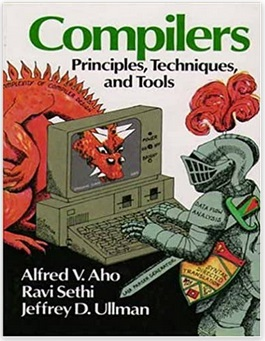

Profesor Cátedra "Compiladores e Intérpretes", en la UCSE (1998 - 2008).
Investigador Proyecto: “SEPa!: Software para la enseñanza de Parsing”, en la UCSE (2001 - 2006).
×
PUBLICACIONES Y TRABAJOS PRESENTADOS EN CONGRESOS Y REUNIONES CIENTÍFICAS
Construcción de un Compilador Orientado a Objetos: TSD Smalltalk v 1.0b.
Presentado junto a los alumnos Rodrigo Julián, Orlando Jimenez, Roberto Figueroa y Andrés Arias Paz en las 26as Jornadas Argentinas de Informática e Investigación Operativa (JAIIO), organizadas por la Sociedad Argentina de Informática e Investigación Operativa (SADIO). Buenos Aires, 11 al 15 de Agosto de 1997
Traductor LBOP.
Presentado junto a los alumnos Raúl Ola, Luciano Biazutti y Mario Petersen en las 4as Jornadas de Informática realizadas en el marco del 2o Segundo Congreso de Informática SAN JUAN '97. San Juan, 4 al 8 de Noviembre de 1997.
Herramientas para la Construcción de Compiladores.
Informe Final de un Proyecto de Estudio, Análisis y Aplicación. 102 pp. Junio de 1998. Coautoría con Orlando Jiménez, Salvador V. Cavadini y Rodrigo Julián.
Construcción de un Prototipo de Administrador de Bases de Datos Orientado a Objetos y de un Shell generador de Clases Persistentes.
Presentado por el Ing. Orlando Jimenez en las ASOO ‘98, Simposio en Orientación a Objetos, en el marco de las 27as Jornadas Argentinas de Informática e Investigación Operativa (JAIIO), organizadas por la Sociedad Argentina de Informática e Investigación Operativa (SADIO). Buenos Aires, 31 de agosto al 4 de setiembre de 1998.
An Efficient Algorithm for Constructing the Control Dependence Graph.
Proceedings of the International Conference on Computer Science, Software Engineering, Information Technology, e-Business, and Applications (CSITeA’02), June 6-8, 2002, Hotel Internacional Foz and Convention Center, Foz do Iguazu, Brazil. Coautoría con Salvador Cavadini.
Minime: una máquina virtual visual.
Nuevas Propuestas. Revista de la Universidad Católica de Santiago del Estero. Nº 36. U.C.S.E. Santiago del Estero. pp. 97-106. Diciembre de 2004. Coautoría con Salvador Cavadini y Pablo Berdaguer.
Desarrollo e Implementación de Sistemas en el IPVU de Sgo. del Estero (1995-2022).
Administrativo en Imprenta Minina (1990-1993)
Programación de terminales POS (Verifone) en Tarjeta SOL (2005-2012)
Programación freelance (2010-...)
Habilidades
Programación de POS Verifone
Programación de terminales Verifone Tranz 380 y Omni 395
CTXO Workbench

Diseño y desarrollo de Compiladores e Intérpretes
Diseño y Desarrollo de Herramientas para la enseñanza de parsing
CPascalDelphi
Diseño, desarrollo e implementación de sistemas de gestión administrativa
Sistemas contables, de gestión de Expedientes, liquidación de Sueldos, etc.